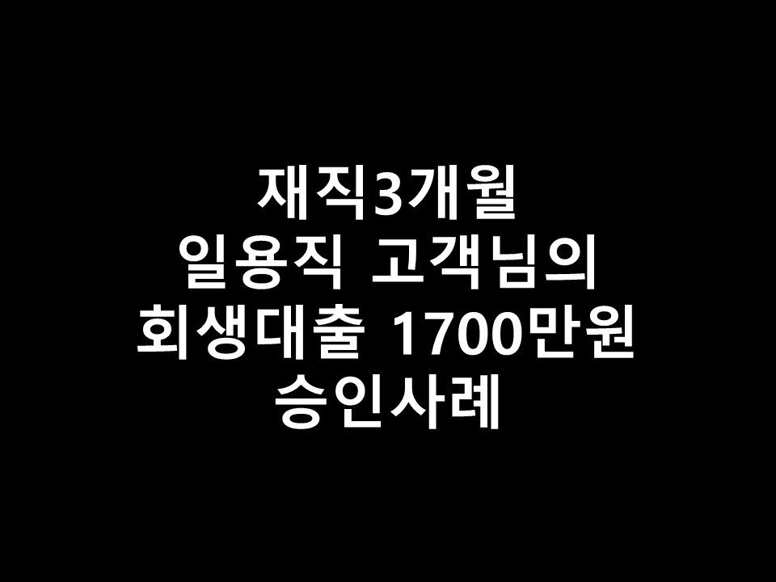
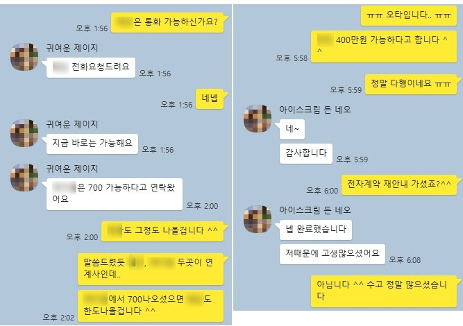

★재직3개월 일용직 고객님의 회생대출 1700만원 승인사례★

안녕하세요 ^^ 오늘은 재직3개월 일용직 고객님의 회생대출 1700만원 승인사례를 소개해드리겠습니다.
고객님께서는 건설회사에서 일용직으로 근무하고 계셨으며, 4대보험 가입, 재직기간은 만 3개월, 월평균 소득은 270만원을 통장으로 수령하고계셨습니다 ^^
현재 회생 60회중32회차, 미납은 1회, 월 변제금은 20만원이었으며, 대부3곳에 각각 300만원씩의 대출을 갖고계셨습니다.
고객님께서는 생활자금이 필요하셔서 저희 뱅크앤론으로 대출문의를 주셨습니다 ~!
고객님의 조건을 보았을때 최근 대출 부결이력만 없으셨다면 대출 충분히 알아봐드릴 수있을듯 하여,
저축은행권으로 먼저 조회를 해드렸으나.. 아무래도 재직기간 단기로 어렵다는 결과를 받았습니다.
대부업으로는 충분히 대출 가능하실듯 하여, T대부로 조회를 한 결과, T대부 600만원, T대부의 연계사인 A대부 700만원(회생미납납부조건)의 한도가 나오셨습니다 ^^
고객님께서는 총 1300만원의 한도로 기존대출 3건을 정리해주시고, 회생미납도 정리해주셨습니다 ^^
고객님께서는 추가로 금액이 필요하다고 말씀해주셨기에, A대부로 조회를 한 결과, 400만원의 한도가 나왔습니다.
바로 진행을 도움드렸고, 고객님께서는 기존대출을 대환하고, 회생미납을 정리함과 동시에 약 800만원 가량의 가용자금을 받아가실 수있게 되었습니다 ^^
고객님께서 추후 재직기간이 더 늘어나고, 급여도 올라가게 되면 이번에 받으신 대부대출을 저축은행1곳으로
통합할 수있게 알아봐드리기로 하였습니다~!
아래는 저와 고객님의 대화내용의 일부분입니다. 참고 부탁드립니다 ^^ 감사합니다.
